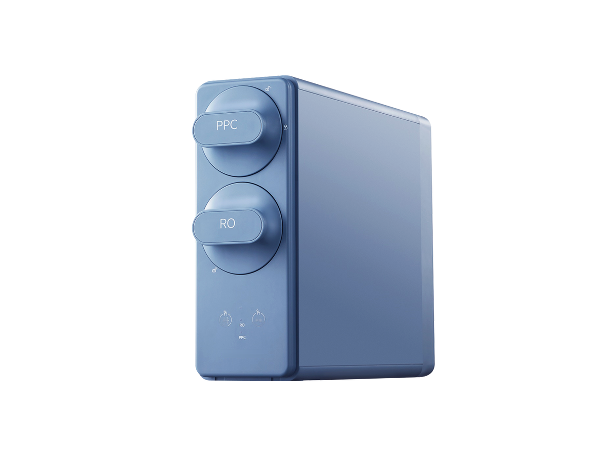

Sottolavello
SottolavelloRP-U07
Purificatore RO sottolavello 400–600 GPD
SKU: RP-U07
MOQ: da confermare su richiesta
Home/Prodotti/Sistemi RO sottolavello/ RP-U09

Sistemi RO sottolavello
Purificatore RO ad accesso frontale ad alta capacità — due livelli di capacità. RP-U09 guida la serie.
RP-U09 e RP-U10 sono due livelli di capacità dello stesso purificatore RO ad accesso frontale e condividono lo stesso schema di filtrazione e la stessa struttura di cambio cartuccia ad accesso frontale. RP-U09 è il livello ad alta capacità (800–1400 GPD, 2,0–3,5 L/min, 382 × 148 × 358,5 mm); RP-U10 è il livello compatto (400–1000 GPD, 1,05–2,6 L/min, 398 × 114 × 303,5 mm). I due livelli si sovrappongono a 800–1000 GPD. Le specifiche sono confermate per modello e ordine.
Richiedi un preventivo per RP-U09
Tensione / frequenza configurabili per il paese di destinazione. Altre configurazioni sono confermate per ordine.
RP-U09 è un purificatore RO ad accesso frontale ad alta capacità per installazione sottolavello. Il livello ad alta capacità funziona a 800–1400 GPD con una portata di 2,0–3,5 L/min e il livello compatto copre 400–1000 GPD a 1,05–2,6 L/min, così i due livelli si sovrappongono a 800–1000 GPD. Entrambi i livelli condividono la stessa filtrazione composita pre/post filtro + RO e la stessa struttura di cambio cartuccia ad accesso frontale, con un volume nominale di acqua purificata di 4000 L sul livello ad alta capacità. È pensato per i titolari di marchio che hanno bisogno di un RO sottolavello ad alto flusso per famiglie numerose.
Qual è la quantità minima d'ordine?
Il primo ordine è di 200 unità per modello, e i riordini sono di 500 unità.
Posso ordinare un campione prima di un ordine in volume?
Sì. I campioni sono pronti in 15 giorni e il costo del campione viene rimborsato con il primo ordine in volume. Gli ordini in volume richiedono 40 giorni dopo l'approvazione del campione e vengono spediti FOB Shenzhen.
Quale livello dovrei scegliere?
Quotare come RP-U09 e specificare il livello: alta capacità 800–1400 GPD o compatto 400–1000 GPD. Il livello compatto è disponibile anche in finitura blu con le stesse specifiche.
Due livelli di capacità — quotare come RP-U09 e specificare il livello (alta capacità 800–1400 GPD o compatto 400–1000 GPD).
Passi il cursore sull'immagine di una variante per vederne le specifiche. Sui touchscreen, tocchi un'immagine.


Specifiche complete di ciascuna variante, fianco a fianco. La tabella delle specifiche più avanti mostra i valori di RP-U09.
| Specifica | RP-U09-1 — alta capacità (M2102R) | RP-U09-2 — compatto (M2103R) |
|---|---|---|
| Capacità RO | 800–1400 GPD | 400–1000 GPD |
| Produzione RO | 2.0–3.5 L/min | 1.05–2.6 L/min |
| Dimensioni (L×P×A) | 382 × 148 × 358.5 mm | 398 × 114 × 303.5 mm; la lunghezza comprende le cartucce |
| Volume nominale di acqua purificata | 4000 L | >4000 L |
| Filtrazione | Prefiltro/post-filtro composito + RO | Prefiltro/post-filtro composito + RO |
| Tensione / frequenza | Configurabile per il paese di destinazione | Configurabile per il paese di destinazione |
| Colore | Bianco | Bianco, blu |
7 righe di specifiche dal catalogo ROPureOEM.
| Capacità RO | 800–1400 GPD |
|---|---|
| Produzione RO | 2.0–3.5 L/min |
| Dimensioni (L×P×A) | 382 × 148 × 358.5 mm |
| Volume nominale di acqua purificata | 4000 L |
| Filtrazione | Prefiltro/post-filtro composito + RO |
| Tensione / frequenza | Configurabile per il paese di destinazione |
| Altre configurazioni | Confermato per ordine |
Le specifiche sono tratte dal catalogo ROPureOEM. Se un valore non è ancora confermato, è indicato come “Confermato per ordine” — non pubblichiamo valori non confermati.
SottolavelloPurificatore RO sottolavello 400–600 GPD
SKU: RP-U07
MOQ: da confermare su richiesta
 Sottolavello
SottolavelloRO sottolavello con riscaldamento ad accumulo
SKU: RP-U08
MOQ: da confermare su richiesta
 Sottolavello
SottolavelloPurificatore RO a tre cartucce
SKU: RP-U11
MOQ: da confermare su richiesta
 Sottolavello
SottolavelloPurificatore RO compatto a due cartucce
SKU: RP-U12
MOQ: da confermare su richiesta